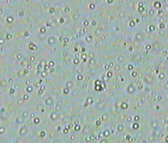

Elemente de termodinamică. Cald şi rece
A-3. Lumea microscopică
Ochii noştri nu pot distinge detalii mai fine de aproximativ 70 µm. Pentru toate detaliile mai mici decât
această limită observăm doar un aspect uniform, fără diferenţe.
 Activitatea experimentală 3-1
Activitatea experimentală 3-1
Observă cu ajutorul unui microscop detalii, acolo unde aspectul pare uniform. Lucrează în echipă.
Pasul 1. Puneţi pe măsuţa unui microscop o ilustraţie color dintr−un ziar sau dintr-o revistă. Iluminaţi
cu o lampă ilustraţia, astfel ca în obiectivul microscopului să pătrundă suficientă lumină reflectată pe ilustraţie.
Pasul 2. Reglaţi microscopul până când obţineţi o imagine clară, mult mărită a unei zone aparent uniformă
a ilustraţiei. Încercaţi şi alte zone. Descrieţi ceea ce vedeţi prin microscop.
Surprinzător, zone aparent uniforme sunt alcătuite din pete minuscule, distincte! Doar incapacitatea noastră de a vedea
detalii prea fine ne ascunde aspectul real al lucrurilor.
Este aşadar posibil ca apa, în ciuda aspectului său uniform, să fie alcătuită din "părticele" prea mici pentru a fi văzute
cu ochiul liber.
Multă vreme, această idee a rămas doar o ipoteză, nefiind confirmată de nici o observaţie experimentală. Dar în 1827,
botanistul englez Robert Brown a descoperit o "forfotă" continuă a particulelor vizibile la microscop, studiind o
suspensie de polen în apă.
Figura 3-1. Robert Brown şi microscopul cu care
a studiat polenul.
Această agitaţie continuă, dezordonată a particulelor microscopice este numită de atunci mişcare browniană.
Activitatea experimentală 3-2
Observă mişcarea browninană în apă a particulelor de grăsime ale laptelui.
Pasul 1. Pune pe o lamelă de microscop o picătură mare de apă distilată.
Pasul 2. "Înmoaie" vârful unui ac în lapte pasteurizat. Pe vârful acului ai acum o cantitate minusculă de
lapte. Cufundă vârful acului în picătura de apă de pe lama de microscop şi amestecă. Obţii astfel o suspensie foarte
diluată.
Pasul 3. Acoperă lama cu o lamelă şi îndepărtează excesul de lichid prin tamponare cu hârtie absorbantă.
Pune ansamblul pe măsuţa unui microscop cu grosisment mai mare de 200x.
Pasul 4. Focalizează cu atenţie imaginea până când obţii ceva asemănător imaginii din figura 3-2.
Figura 3-2. Picături de grăsime din lapte observate
la microscop. Diametrele acestora variază între 0,5 micro;m şi 3 µm.
Pasul 5. Observă cu atenţie micile picături de grăsime. La început, s-ar putea să vezi picăturile mişcându-se
într-o singură direcţie. Nu aceasta este mişcarea browniană, ci doar efectul curenţilor de lichid. Aşteaptă ca mişcările
de ansamblu să înceteze. Vei vedea atunci că picăturile de grăsime îşi modifică lent poziţia care-ncotro, ca şi când ar
fi împinse la întâmplare într-o parte sau alta, ca în bucla de film prezentată în figura 3-3.
|  |
Figura 3-3. Mişcarea browniană a picăturilor de grăsime din lapte,
aflate în suspensie în apă. |
|
Accesează aici un film de rezoluţie mai bună şi durată mai
mare a mişcării brownine. |
Mişcările dezordonate ale picăturilor de grăsime s−ar putea datora unui "bombardament" din partea unor particule de apă, prea
mici pentru a fi văzute la microscop.
Abia în 1905, faimosul fizician Albert Einstein (figura 3-4) a calculat cum ar trebui să se mişte o particulă
browniană (cum este cea de grăsime) datorită ciocnirilor întâmplătoare cu particule mult mai mici.
|
Figura 3-4. Albert Einstein
(1879−1955) |
În sfârşit, în 1909, fizicianul francez Jean Perrin (figura 3-5) a observat cantitativ mişcarea individuală a unor
particule browniene.
 |
Figura 3-5. Jean Perrin
(1870−1942) |
În figura 3-6 este prezentată înregistrarea traiectoriei unei particule browniene.
Figura 3-6. Înregistrarea traiectoriei unei particule
browniene (după un desen de Jean Perrin).
Măsurând cât de departe ajung particulele browniene şi în cât timp, Perrin a confirmat experimental concluziile obţinute
prin calcul de către Einstein.
Astfel, la începutul secolului XX aveam dovezi incontestabile ale unui fapt incredibil la prima vedere:
 Toate corpurile sunt alcătuite din particule minuscule (molecule), aflate în continuă
mişcare dezordonată (agitaţie termică).
Toate corpurile sunt alcătuite din particule minuscule (molecule), aflate în continuă
mişcare dezordonată (agitaţie termică).
Moleculele sunt prea mici pentru a fi văzute cu ochiul liber, nici chiar cu un microscop optic performant. Dar fizicienii
au reuşit să le vadă prima dată cu "ochii minţii", analizând cu atenţie o observaţie surprinzătoare a unui botanist care
cerceta polenul.
Înţelegând cum interacţionează moleculele, vom înţelege multe dintre procesele şi transformările care altfel ar fi rămas
mistere nedezlegate!
 Provocarea 3-1
Provocarea 3-1
Dacă pulverizezi în faţa ta puţin parfum, simţi aproape imediat mirosul acestuia. De ce oare şi cei aflaţi mai departe
de tine vor simţi mirosul parfumului? De ce cu atât mai târziu, cu cât se află mai departe de tine? Foloseşte-te de ideea
că aerul şi parfumul sunt alcătuite din molecule aflate în continuă agitaţie dezordonată.